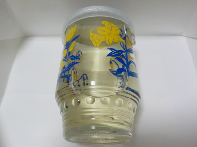

旭日酒造のワンカップは何に使うといいんだろう。
2021/03/12

花柄のワンカップです。
商品名、製造元、原材料はシールで貼ってあり簡単にはがせました。
この瓶は何かの容器として使うためにある感じがします。
調味料入れかなー。
島根県出雲市今市町662
更新日 : 2021/03/12
2021/03/12

花柄のワンカップです。
商品名、製造元、原材料はシールで貼ってあり簡単にはがせました。
この瓶は何かの容器として使うためにある感じがします。
調味料入れかなー。